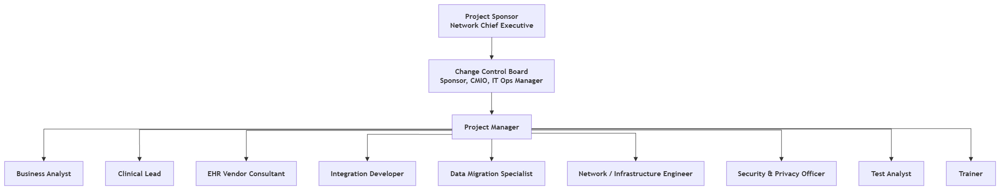

Quality, Change & Team
How do we know the system is good enough, how are changes controlled, and who is responsible?
6quality metrics
≥ 99.5%migration accuracy
3change requests
1Accountable per deliverable
Quality requirements and metrics
| ID | Requirement | Metric | Target | How / when checked | WBS | Owner |
|---|---|---|---|---|---|---|
| Q1 | Data migration accuracy | % of sampled records matching source | ≥ 99.5% | Sample audit of 500 records per test cycle | 4.2, 7.3 | Data Migration Specialist |
| Q2 | Critical defects at go-live | Open severity-1 defects | 0 | Defect log review at readiness sign-off (M3) | 5.1, 5.2 | Test Analyst |
| Q3 | UAT pass rate | % of UAT scripts passed | ≥ 95% | UAT results report | 5.2 | Clinical Lead |
| Q4 | Staff trained before go-live | % of staff completing training | ≥ 95% | Training attendance records | 6.2 | Trainer |
| Q5 | System availability | Uptime during hypercare | ≥ 99.9% | Vendor monitoring report | 8.1 | IT Operations Manager |
| Q6 | Record retrieval time | Time to open full cross-site record | < 2 minutes | Timed sample, 3 months after go-live | Benefit B1 | Clinical Lead |
How it connects: each metric is checked at a specific WBS task, and together migration accuracy (4.2), UAT pass rate (5.2), zero severity-1 defects and ≥ 95% trained (6.2) form the go-live readiness gate, milestone M3.
Change requests
| CR | Date | Raised by | Change | Impact | Risk impact | Decision | Decided |
|---|---|---|---|---|---|---|---|
| CR-01 | 14 Aug 2026 | CMIO | Add radiology image viewer to clinician workspace | Scope +; +5 days on 3.3 (non-critical at the time); +$12,000 | Low (uses existing interface) | Approved | CCB 21 Aug 2026 |
| CR-02 | 18 Sep 2026 | Project Manager | Add second vendor consultant to 3.3 Integrations to recover 5 of 10 days lost on 3.2 | Schedule −5 days; cost +$25,600 (20 days × 8 h × $160) from contingency | Reduces R03/R04 exposure | Approved | CCB 22 Sep 2026 |
| CR-03 | 21 Sep 2026 | Site B Director | Add patient-facing mobile app | Out of scope (exclusion); est. +$400,000 and +60 days | High | Rejected – refer to future project | CCB 22 Sep 2026 |
Decision logic: the Change Control Board approves changes that protect the objectives within contingency (CR-01, CR-02), and rejects changes that expand scope beyond the charter (CR-03 is an explicit exclusion).
Team structure and RACI

Add screenshot: images/team-chart.pngWhat this shows
The sponsor and Change Control Board sit above the Project Manager, who leads the business analysis, clinical, vendor, technical, security and training streams.
How it connects
The owners here match the risk owners (Risk) and communication owners.
Decision / implication
One Accountable person per deliverable avoids gaps. The CMIO is accountable for clinical content and the PM for delivery.
| Deliverable | Sponsor | CMIO | Project Manager | Business Analyst | Clinical Lead | EHR Vendor | IT Ops / Infrastructure | Security & Privacy Officer | Trainer |
|---|---|---|---|---|---|---|---|---|---|
| Project charter | A | C | R | C | C | I | I | I | I |
| Requirements specification | I | A | C | R | R | C | C | C | I |
| Vendor selection | A | C | R | R | C | I | C | C | I |
| EHR configuration | I | A | C | C | R | R | I | C | I |
| Integrations | I | C | A | C | C | R | R | C | I |
| Data migration | I | C | A | R | C | R | C | C | I |
| Privacy & security controls | I | C | A | I | I | C | C | R | I |
| Testing & UAT | I | A | C | C | R | R | C | C | I |
| Training | I | C | A | I | C | C | I | I | R |
| Go-live decision | A | R | R | I | C | C | C | C | I |
| Project closure | A | C | R | C | C | I | C | I | I |